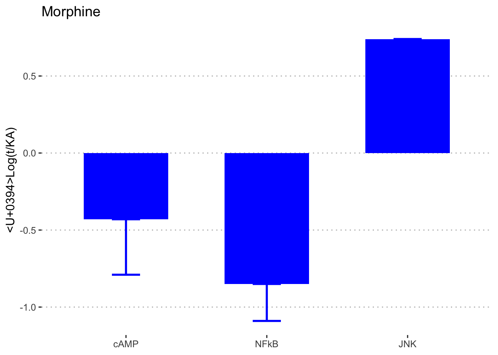

Analysis
Last updated: 2018-10-02
workflowr checks: (Click a bullet for more information)-
✖ R Markdown file: uncommitted changes
The R Markdown file has unstaged changes. To know which version of the R Markdown file created these results, you’ll want to first commit it to the Git repo. If you’re still working on the analysis, you can ignore this warning. When you’re finished, you can runwflow_publishto commit the R Markdown file and build the HTML. -
✔ Environment: empty
Great job! The global environment was empty. Objects defined in the global environment can affect the analysis in your R Markdown file in unknown ways. For reproduciblity it’s best to always run the code in an empty environment.
-
✔ Seed:
set.seed(20180924)The command
set.seed(20180924)was run prior to running the code in the R Markdown file. Setting a seed ensures that any results that rely on randomness, e.g. subsampling or permutations, are reproducible. -
✔ Session information: recorded
Great job! Recording the operating system, R version, and package versions is critical for reproducibility.
-
Great! You are using Git for version control. Tracking code development and connecting the code version to the results is critical for reproducibility. The version displayed above was the version of the Git repository at the time these results were generated.✔ Repository version: f86a7f8
Note that you need to be careful to ensure that all relevant files for the analysis have been committed to Git prior to generating the results (you can usewflow_publishorwflow_git_commit). workflowr only checks the R Markdown file, but you know if there are other scripts or data files that it depends on. Below is the status of the Git repository when the results were generated:
Note that any generated files, e.g. HTML, png, CSS, etc., are not included in this status report because it is ok for generated content to have uncommitted changes.Ignored files: Ignored: .Rproj.user/9BE7717F/console06/ Ignored: .Rproj.user/9BE7717F/ctx/ Ignored: .Rproj.user/9BE7717F/explorer-cache/ Ignored: .Rproj.user/9BE7717F/pcs/ Ignored: .Rproj.user/9BE7717F/presentation/ Ignored: .Rproj.user/9BE7717F/profiles-cache/ Ignored: .Rproj.user/9BE7717F/sources/per/ Ignored: .Rproj.user/9BE7717F/sources/s-105C1B2B/ Ignored: .Rproj.user/9BE7717F/viewer-cache/ Ignored: .Rproj.user/shared/notebooks/29EF2C04-analysis/ Unstaged changes: Modified: .Rhistory Modified: .Rproj.user/9BE7717F/sources/prop/INDEX Modified: .Rproj.user/shared/notebooks/paths Modified: analysis/analysis.Rmd
Expand here to see past versions:
| File | Version | Author | Date | Message |
|---|---|---|---|---|
| Rmd | 41eb60a | sdhutchins | 2018-09-28 | Updated analysis. |
| html | 41eb60a | sdhutchins | 2018-09-28 | Updated analysis. |
| Rmd | 5d39156 | S. Hutchins | 2018-09-28 | Added code and analysis for bar charts. |
| html | 5d39156 | S. Hutchins | 2018-09-28 | Added code and analysis for bar charts. |
| html | fbd5b51 | S. Hutchins | 2018-09-25 | Build site. |
| html | d4b0350 | S. Hutchins | 2018-09-25 | Build site. |
| Rmd | 876098d | S. Hutchins | 2018-09-25 | Updated knitr chunks |
| html | 1921828 | S. Hutchins | 2018-09-25 | Build site. |
| Rmd | e4fd4f5 | S. Hutchins | 2018-09-25 | Added bar charts |
Generating Bar Plots for Δ logKa
Maccaca Mulatta + Ligands

Expand here to see past versions of unnamed-chunk-1-1.png:
| Version | Author | Date |
|---|---|---|
| 5d39156 | S. Hutchins | 2018-09-28 |
| 1921828 | S. Hutchins | 2018-09-25 |
Expand here to see past versions of unnamed-chunk-1-2.png:
| Version | Author | Date |
|---|---|---|
| 41eb60a | sdhutchins | 2018-09-28 |


Homo sapiens + Ligands



Session information
sessionInfo()R version 3.5.1 (2018-07-02)
Platform: x86_64-w64-mingw32/x64 (64-bit)
Running under: Windows 7 x64 (build 7601) Service Pack 1
Matrix products: default
locale:
[1] LC_COLLATE=English_United States.1252
[2] LC_CTYPE=English_United States.1252
[3] LC_MONETARY=English_United States.1252
[4] LC_NUMERIC=C
[5] LC_TIME=English_United States.1252
attached base packages:
[1] stats graphics grDevices utils datasets methods base
other attached packages:
[1] bindrcpp_0.2.2 ggpubr_0.1.8 magrittr_1.5 forcats_0.3.0
[5] stringr_1.3.1 dplyr_0.7.6 purrr_0.2.5 readr_1.1.1
[9] tidyr_0.8.1 tibble_1.4.2 ggplot2_3.0.0 tidyverse_1.2.1
loaded via a namespace (and not attached):
[1] tidyselect_0.2.4 haven_1.1.2 lattice_0.20-35
[4] colorspace_1.3-2 htmltools_0.3.6 yaml_2.2.0
[7] rlang_0.2.2 R.oo_1.22.0 pillar_1.3.0
[10] glue_1.3.0 withr_2.1.2 R.utils_2.7.0
[13] modelr_0.1.2 readxl_1.1.0 bindr_0.1.1
[16] plyr_1.8.4 munsell_0.5.0 gtable_0.2.0
[19] workflowr_1.1.1 cellranger_1.1.0 rvest_0.3.2
[22] R.methodsS3_1.7.1 evaluate_0.11 labeling_0.3
[25] knitr_1.20 broom_0.5.0 Rcpp_0.12.18
[28] scales_1.0.0 backports_1.1.2 jsonlite_1.5
[31] hms_0.4.2 digest_0.6.17 stringi_1.2.4
[34] grid_3.5.1 rprojroot_1.3-2 cli_1.0.1
[37] tools_3.5.1 lazyeval_0.2.1 crayon_1.3.4
[40] whisker_0.3-2 pkgconfig_2.0.2 xml2_1.2.0
[43] lubridate_1.7.4 assertthat_0.2.0 rmarkdown_1.10
[46] httr_1.3.1 rstudioapi_0.7 R6_2.2.2
[49] nlme_3.1-137 git2r_0.23.0 compiler_3.5.1 This reproducible R Markdown analysis was created with workflowr 1.1.1